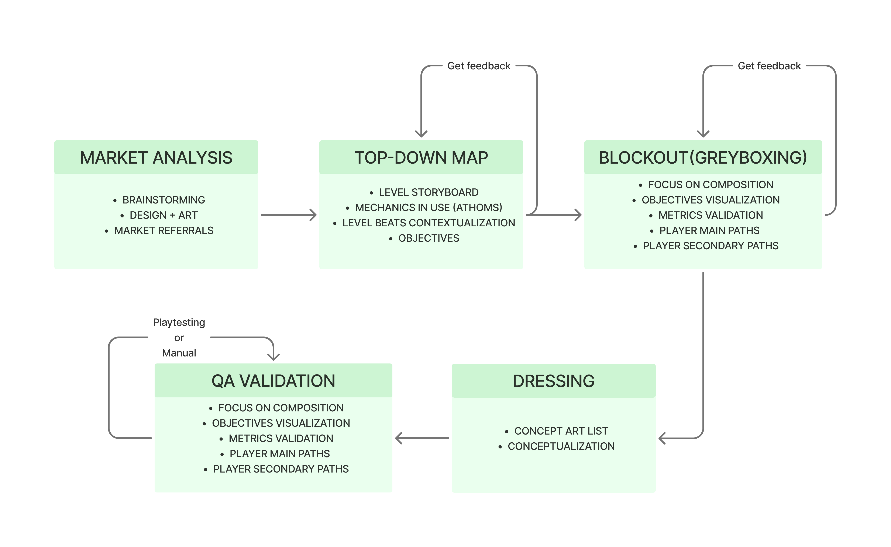
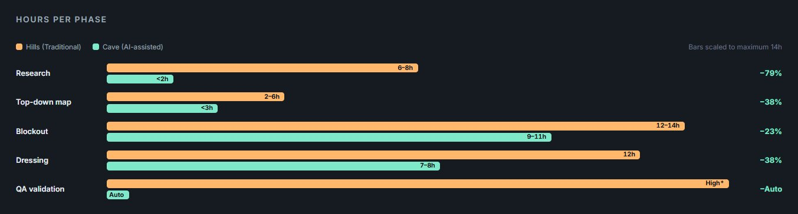
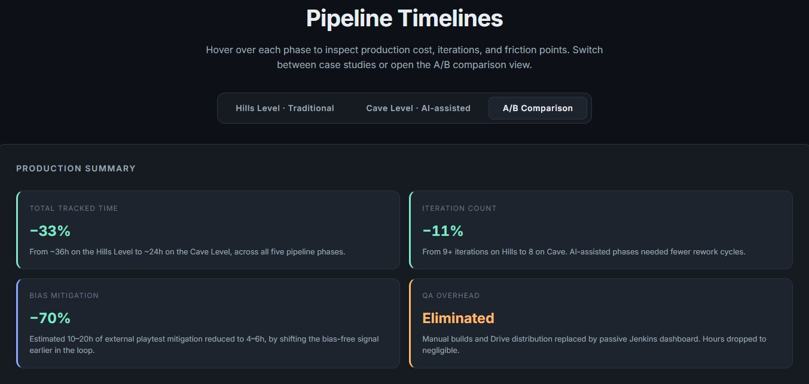

AI-Assisted Level Design Pipeline
Redefining the transition from blockout to dressing with Generative AI as a co-creation partner.
Overview
2025 - 2026
This project tackles one of the biggest friction points in game development: the transition between the technical blockout (where player metrics and navigation are defined) and the set dressing phase.
I designed a co-creation pipeline that integrates Generative AI directly into the Unreal Engine 5 level design workflow. The goal isn't to let AI do the design for us, but to use it as a high-speed iteration tool that respects the gameplay metrics defined during blockout.
Contribution
- Designed and documented a five-phase AI-assisted pipeline integrating Claude, ChatGPT, Gemini and Jenkins.
- Ran a full A/B production test comparing two Lyra levels under both workflows.
- Built four reusable prompts validated across genres and visual styles.
- Delivered an interactive web report with legibility analysis and phase-by-phase breakdown.

Friction lives between blockout and dressing.
In real production, the level designer understands the functional needs of the space, but communicating how those decisions should translate into a specific visual direction is expensive in both time and coordination.

The traditional five-phase pipeline used on Lyra.
3-5
correction cycles per level area between blockout and dressing in the Hills Level baseline.
30%
of written guidelines still caused misinterpretations even with explicit dressing rules in the LDD.
1-3h
to build a single Unreal package for QA, before any actual testing could begin.
Explore each phase side by side.
Pick a phase to compare the traditional workflow against the AI-assisted one. Every phase kept the designer at the centre; AI intervened only where the bottleneck was communication or materialization, never creative decision-making.
01 · Briefing
Translate gameplay parameters into a structured visual brief that both design and art can execute without follow-up questions.
Unstructured references
Hours on ArtStation, Pinterest and Figma moodboards. Loose visual references that leave gameplay-critical decisions to the artist's interpretation.
Structured briefing prompt
Claude receives the GDD and level parameters, returns a brief with narrative framing, visual priorities tied to guidance, a color palette justified by function, and a list of elements to suppress.
Every visual priority in the brief specifies which guidance technique it serves; every color is justified by its navigation function, not by aesthetics.
02 · Top-Down Map
Turn a dense, designer-only Confluence document into an interactive diagram anyone on the team can read in minutes.
Hand-drawn Confluence map
Zone layout, height map, blockout screenshots and progression lines coexist in the same canvas. Extracting the progression logic takes 20-30 minutes of active reading per team member.
Interactive HTML diagram
Claude parses the source image, extracts zone hierarchy and connection types, and rebuilds it as a browsable HTML with height-coded lanes, typed transitions and an inline legibility analysis.
Reading time from ~30 minutes to under 10. The auto-analysis also surfaced two design gaps that the original diagram never exposed.
03 · Blockout & Guidance Validation
Construction stays in the engine. What AI changes is the validation loop between iterations, entering as a neutral reader with no prior context about the level.
Self-review + external playtest
The designer who built the level is the worst person to evaluate whether it communicates direction. First bias-free reading only arrives at external playtesting, after ~30 hours of committed work.
Compositional analysis in 4 minutes
Claude analyses a blockout screenshot from a pure guidance perspective: dominant focal point, directional vectors, principal affordance, path hierarchy, guidance failures. Then writes a Gemini prompt that turns each failure into a visual correction.
Bias-free feedback shifts from external playtesting (after construction) to the blockout phase itself, when corrections are still cheap.
04 · Assisted Dressing
Give the artist a concrete visual anchor before the first art pass, without commissioning concept art.
Concept art or moodboards
Placeholder self-dressing pass by the level designer (4h), art bible alignment meeting (2h), first art pass (4h). Multiple correction cycles because the conversation is anchored to written descriptions.
Image-to-image blockout dressing
ChatGPT or Gemini take a blockout screenshot and return a dressed version in the target visual style, preserving geometry, sightlines and the position of the principal affordance.
From one variant per session to 5-8. The AI-generated image is not the final dressing; it's a shared visual artefact that anchors the conversation between designer and artist from the start.
05 · QA Validation
Not generative AI, but the automation strategy that pairs with it: remove the compilation and distribution overhead from every QA cycle.
Manual builds + Drive uploads
1-3 hours per build in Unreal, 30 minutes per upload to Google Drive, plus the failed builds that force a full restart. The person triggering the build cannot work on the project during that time.
Jenkins nightly builds + Dashboard
Every night Jenkins pulls from Perforce, compiles, runs the automated functional tests and publishes the build. A web dashboard exposes the state of the project at any moment. 30 builds delivered with 87% success rate during production.
Manual overhead drops to negligible. QA becomes a web page consultation instead of an active cost per sprint.
A/B production test: Hills vs Cave.
Two levels of Lyra, developed by the same student team, on the same engine version, with the same target audience and the same core mechanics. One under the traditional pipeline, one under the AI-assisted pipeline. Different levels, controlled variables, honest limitations.

Hills Level
- ~36hTotal tracked time
- 9+Iterations
- 0.55Specificity ratio
- HighQA overhead
Cave Level
- ~24hTotal tracked time
- 8Iterations
- 0.88Specificity ratio
- NegligibleQA overhead

Hours per phase · Hills Level vs Cave Level.

Interactive A/B summary panel produced as a companion deliverable.
Three learnings from the production.
AI helps where the bottleneck is communication, not creation.
The phases that crossed the 40% reduction threshold by a wide margin were the ones where the manual cost was time spent organising and aligning information across roles. AI underperformed where the work itself was construction in the engine.
AI introduces verification work that scales with output volume.
The dressing prompt returned references in 10 minutes that would have required hours of concept art, but each generation still needed a manual review pass to catch decorative elements introduced beyond the blockout geometry.
Bias mitigation timing matters more than bias elimination.
The designer's familiarity bias is a structural condition of the role. AI can't eliminate it, but it can shift the moment at which the first bias-free signal enters the loop, from external playtesting to the blockout phase itself.
The 33% reduction reflects this team, on these levels, with this scope. It doesn't generalise to a universal claim. The defensible finding is narrower and more useful: the pipeline reliably reduces the cost of communication-heavy phases and eliminates QA distribution overhead, but does not meaningfully change the construction work itself, and introduces verification costs that scale with the volume of AI output. Used in that frame, it delivers measurable gains.
Where this could go next.
- Replicating the Hills Level under the AI pipeline to neutralise the level layout as a confounding variable.
- Extending the study to other genres and visual styles (horror, cyberpunk, hyper-realistic).
- Adapting the pipeline to adjacent design disciplines: narrative, sound, encounter, combat balancing.
- Engine-side integration through the Model Context Protocol so Claude reads scenes and blueprints directly.
- Replicating the A/B test with a professional studio where the traditional baseline is harder to beat.
At a glance.
- TypeApplied thesis · Research
- Case studyLyra · 3D puzzle-adventure
- EngineUnreal Engine 5.6.1
- AI toolsClaude, ChatGPT, Gemini
- AutomationJenkins, custom dashboard
- CoordinationConfluence, Jira, Perforce
- Year2025 - 2026